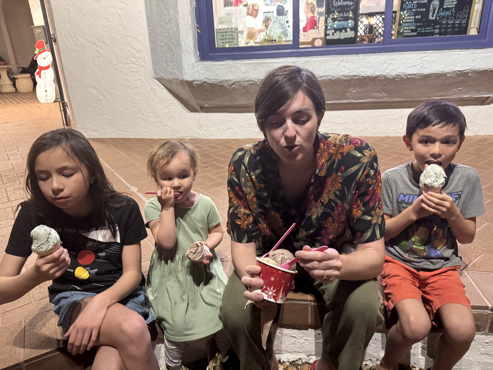

Sarasota 2024
Dec 2024 - Jan 2025
Like many of our trips, it starts with the outbound flight. Flying United with kids is actually much nicer than other airlines. We also flew with all my fly fishing gear so we checked 2 bags. This turns out to be clutch cause we had to bring back a bunch of Christmas presents and books.

The house we were staying at was nice. We had originally though Sarasota was destroyed by Hurricane Milton, but most of the inland houses seemed fine.
As with our family, we spent lots of time on the beach. The first few days we were there was really cold; but the kids are never bothered by the cold when they are at the beach.
Since it was so cold, we decided to goto our family favorite place -- the Teco Manatee Viewing Center. We ended up coming here twice and loved it twice. Rozzy also got her Shark hoodie which turns out to be really useful on the trip.
But this time, we also took the turtle bus to the turtle rescue which the Florida Aquarium does. This was really nice too. There was also a FWC education center for kids there, and the kids loved that. I also got a bunch of fishing advice form them.
They were feeding the turtles at the turtle center!
Duck and I did a lot of fishing this trip. I think this was his favorite part. At first we were fishing with just flies, as if we were in the midwest, but soon we realized everyone fished with live/frozen shrimp. We ended up having lots of success as soon as we switched.
We visited many coffee shops, including this one -- the 9-0 donuts. We ended up finding the best donut place on 2nd to last day in Downtown Sarasota called Pastry Art Espresso.
All duck wanted to do was fish. We caught so many weird fish, Porgies, Pufferfish, Ladyfish, and Cowfish
We really got an appreication of the wildlife in Sarasota Bay when Duck and I waded into the beach flats. Duck saw a shrimps, rays, jumping fish, clams ... it was a wild place.

One of our goals was to catch a fish to eat, but even though we didn't end up doing it, we got really close with some of the flounders we caught. They had to be 14" but we caught a few that was just a few inches short.
Another family favorite activity was to goto Venice Beach and hunt for shark tooth. We ended up finding hundreds of them. But the biggest one was given to us from a old guy in the parking lot. It turns out if you goto downtown Venice, there's a whole industry around shark tooth hunting. We also found a ton of sand fleas here.
There are signs of hurricane everywhere. I ended up trespassing onto this boat what ran ashore under a bridge. There had been signs of some serious partying on this boat.
Then I met a guy from Canada who was just driving around America. He was nice. I also caught a puffer fish.
Of course, it wouldn't be a Florida vacation without excessive ice cream. This Ice Cream joint, Jakes, had some massive numbers of Amish people.
Verity really wanted to goto the Florida Aquarium, it was really expensive though. I ended up buying tickets for the whole family and it was over $200. The aquarium was nice and the kids got to see some of the fish we up close and kids got to touch some rays. Shedd is nicer though.

A strangely nice place was going orange picking at Dooley Groves. Family loves picking fruit for some reason. The oranges were crazy juicy, but the best fruit was the one they were selling at their store. The Pomelo and Grapefruit here was delicious.
As usual, it's hard for me to sit on any trip. But I tried. Here we spent a little time sitting on the porch of the house.
There were a lot of Cyber Trucks in Floirda. Roz got used to screaming "cybertruck!!!" every time she saw one.
The reason I was glad that we checked 2 bags was that Florida had lots of Goodwill bookstores, which were great places for the kids. It got books that they wanted to read at Bargain prices. The 2 checked bag came in just under the 50lb limit!
On the eve of our departure, Duck turned 8. He always ends up with a birthday on our trips cause of new years day birthday.
It was hard for us to leave the warmth of Sarasota. It was espcially hard for duck who cried a lot.